Contents
file: pde_wave_equation_2D.m author: Polcz Péter <ppolcz@gmail.com>
Created on 2016.12.15. Thursday, 21:54:27
% fname: full path of the actual file pcz_cmd_fname('fname'); stack = dbstack; if ~ismember('publish', {stack.name}), persist = pcz_persist(fname); end %persist.backup();
Rezgő membrán szimulációja
A hullámegyenlet segítségével szimulálni tudjuk egy rezgő membrán mozgását különböző alakú tartományok és peremfeltételek esetén.
A hullám egyenlete:
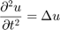
Ez egy hiperbolikus PDE, amelynek numerikus megoldását a PDE Toolbox hyperbolic függvényével számoljuk ki. A hyperbolic megoldó
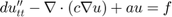
ahol a 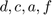 lehetnek függvényei az időnek és a pozíciónak (x,z) is. A mi esetünkben:
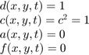
d = 1; c = 1; a = 0; f = 0;
PDE modell. Létrehozunk egy PDE modellt, ahol egyetlen függő változó van, az 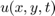
numberOfPDE = 1; pdem = createpde(numberOfPDE);
Az tartomány létrhozása.
Két lehetséges tartományt is definiálunk (a megfelelőt kell kikommentezni).
- 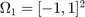 négyzetes tartomány
- 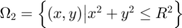 körtartomány
% [Omega1] pdeGeom = geomDataFromPolygon([-1 -1 ; -1 1 ; 1 1 ; 1 -1]); % [Omega2] pdeGeom = geomDataOfCircularHoles([0,0,1]); geometryFromEdges(pdem,pdeGeom); figure('Position', [668 596 1012 377]); subplot(121) pdegplot(pdem, 'edgeLabels', 'on'); axis([-1.1 1.1 -1.1 1.1]); title('$\Omega$ tartomany, amelyen megoldom az egyenletet', 'Interpreter', 'latex');
Az tartomány felosztása, háromszögelés. A háromszögelés finomságát, sűrűségét a generateMesh Hmax tulajdonságával tudjuk szabályozni. A Hmax gyakorlatilag a háromszögek átmérőjének nagyságát szabályozza (megközelítőleg ekkorák lesznek a háromszögek.)
msh = generateMesh(pdem,'Hmax',0.1); subplot(122), pdemesh(pdem); axis equal title('$\Omega$ tartomany felosztasa', 'Interpreter', 'latex');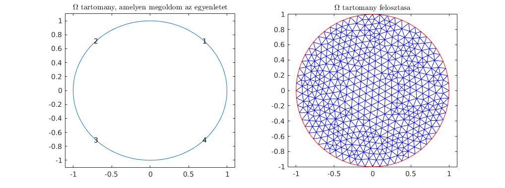
Peremfeltételek
A peremfeltételek esetén is megadok két különböző variációt:
- A két szélső perem ne legyen megkötve (itt a membrán szabadon mozoghat). A membrán másik két oldala legyen rögzített, vagyis itt a hullámfüggvény értéke mindig 0.
- A membrán minden oldal ki van feszítve, azaz 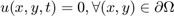
% [1] applyBoundaryCondition(pdem,'Edge',([1 3]), 'g', 0); applyBoundaryCondition(pdem,'Edge',([2 4]), 'u', 0); % [2] applyBoundaryCondition(pdem,'Edge',1:4, 'u', 0);
Kezdeti feltételek
Az eredeti scriptben a következő kezdeti feltételek voltak megadva:
- 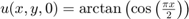.
- 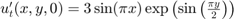.
A script eredeti szerzői így magyarázzák ezt a választást: "This choice avoids putting energy into the higher vibration modes and permits a reasonable time step size."
Én alapvetően azt szerettem volna szimulálni, hogy membrán közepére ütünk egy hatalmasat, ezt nem nehéz szimulálni (elfajúló haranggörbe). Azonban az 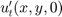 kezdeti feltétel esetén nem volt jobb ötletem mint azt mondani, hogy ez legyen nulla. Egy interneten talált leírásban is végeznek hasonló kísérletet: Vibrating membrane in a circular domain
s = 4; [p,~,t] = meshToPet(msh); x = p(1,:)'; y = p(2,:)'; % Általam definiált kezdeti feltétel u0 = 3*exp(- s^2*(x.^2 + y.^2)); ut0 = x*0; % Eredeti kezdeti feltétel % u0 = atan(cos(pi/2*x)); % ut0 = 3*sin(pi*x).*exp(sin(pi/2*y)); figure('Position', [342 452 1316 433]), subplot(121) trisurf(t(1:3,:)', p(1,:), p(2,:), u0) title('$u(x,y,0)$ kezdeti feltetel','Interpreter','latex') subplot(122), trisurf(t(1:3,:)', p(1,:), p(2,:), ut0); title('$u''_t(x,y,0)$ kezdeti feltetel','Interpreter','latex')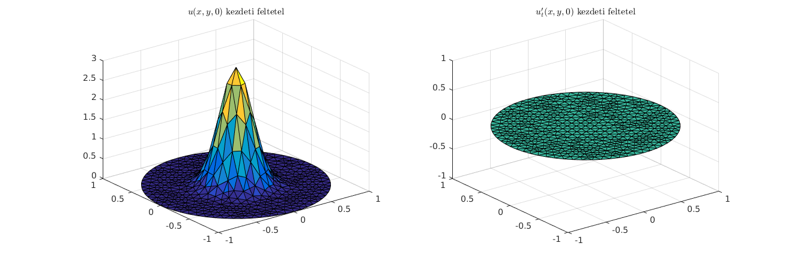
Egyenlet megoldása
% Idő diszkretizálása
T = 5;
n = 201;
tlist = linspace(0,T,n);
uu = hyperbolic(u0,ut0,tlist,pdem,c,a,f,d);
1111 successful steps 116 failed attempts 2456 function evaluations 1 partial derivatives 301 LU decompositions 2455 solutions of linear systems
Animáció
figure umax = max(max(uu)); umin = min(min(uu)); for i = 1:n trisurf(t(1:3,:)', p(1,:), p(2,:), uu(:,i)); axis([-1 1 -1 1 umin umax]); caxis([umin umax]); M(i) = getframe; end movie(M,1); if ismember('publish', {stack.name}), return; end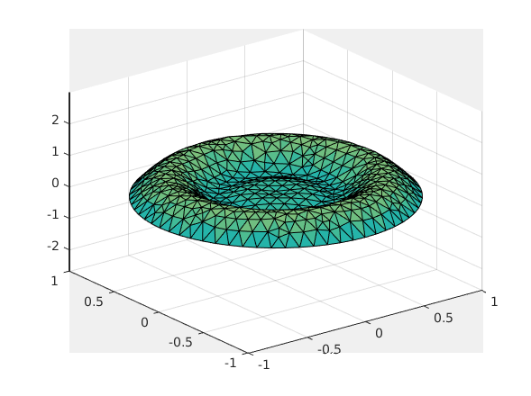